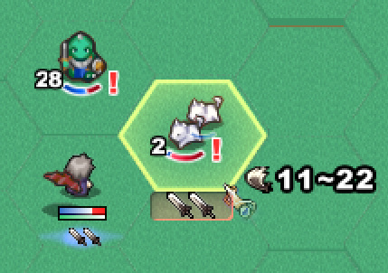
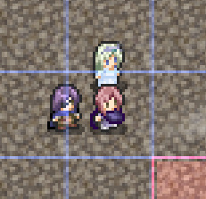
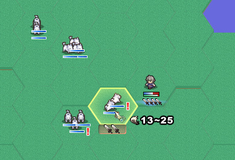

■
2019-11-30 (土) 片道勇者2【42】 細かい修正と残り▼
パーティーシステムなど大きな修正を入れると
だいたいバグがいっぱい出てきますので
内部処理の修正にほとんどの時間を費やした二週間でした。
見た目に変化がないし、期待通りに動くようにしていただけなので何もお見せできない！
今回の中で目に見える変更といえば以下くらいです。
＜敵のHPゲージを「弧状」に変更！＞

敵のHPゲージを「弧状」に変更しました。
ファイアーエムブレムの最新作などでも採用されている方式なのですが、
真横のバーより敵の見た目の邪魔にならないのがいいですね。
ウディタでの実装だと、ゲージの減り具合が違う画像を10パターンくらい作って
絵ごと切り替えるようにして作っています。実は『片道勇者1』の敵ゲージもそうでした。
ゲージが小さければ10％ごとの区切りでもそんなに困らない感じです。
【アルファ2に向けての残り作業】
ここからのアルファ2に向けての実装項目は以下の通りです。
たいていはこれら実装作業そのものとは別に、
バグ修正や微調整によって不明の追加時間がかかります。
●【システム】ショップ機能を抜本的に修正。
売却は手持ち全部からまとめて行えるようにする。
（アルファ1ではドラ○もんのポケットみたいに買い物中に「引き直し」して
手札に売りたいアイテムが来るまで回すマニアックすぎる仕組みでした）
●【システム】視界制限機能（夜間に視界外のNPCを見えなくさせる機能）
●【システム】昼夜の切り替え機能。
●【システム】施設の位置を遠くからマーカーで教えてくれる機能。
●【システム】アドバイス機能を仲間コメント機能で出すよう全面的に変更。
（アドバイスが出るタイミングで仲間ボタンからピコッと吹き出しが出て、
その後に仲間に話すとアドバイスを教えてくれる）
●【データ】アルファ1で絵がなかったカードに絵を付ける。
●【データ】アイテムや特徴を少し増やしたい。
●【データ】敵の出現度合いや強さを距離によって変えてよりゲームらしさを増す。
●【キャラクター】ラフのままの妖精クリスをどうにかする。
●【通信】Twitter通信機能でエンド画面を3枚送信できるようにする。
→ 要望が多かった、「死に際の画面」「所持カード一覧と能力値」
「評価画面」の3枚を一斉にTwitterに送信できるようにします。
仮実装は済んでいます。
●【システム】仮オプションの完成。
●【システム】全体的な視認性の向上。従来で「いつの間にかXXしてた」
という状態になっていた地味な部分をもっと目立たせる。
●【システム】ゲームパッド・キーボードへの仮対応。
これが一体どのくらいかかるか分からないくらい大変そうです。
「移動状態のままカードを選べる」プレイ方式というのが
操作の構築のややこしさを生んでいます。
解法は色々あるでしょうけれども、何通りか試しに作っては壊しながら、
一番マシなのを探していく作業になると思います。
また、各画面モードごとに全部操作を作らないといけないので作業量も相当多い！
一方で、ここは評価に一定量影響しそうな部分だとも考えているので、
仮でもいいので第一版を作って見てもらいたいところです。
●その他、ここに書くのを忘れているであろう要素いろいろ。
という感じです。
この数だとペース的にまずあと一ヶ月で終わらない気がしたので、
うまく目標を区切りつつ最速でぼちぼち作っていきたいと思います。■
2019-11-16 (土) 片道勇者2【41】 パーティー機能▼
今年中にアルファ2にたどり着けるかちょっと怪しいペースになってきました。
時間はほぼ全部お仕事やらなんらかの制作に使ってるんですけどね！
やれるペースでやっていきますが、今年中にα2を出すくらいは努力目標にしたいです。
そのα2時点のものをゲームの基幹部を固めたものとして、
「片道勇者2体験版（動作確認版）」の立ち位置にする予定でいます。
【1マス内パーティーシステム搭載！】
『片道勇者1』には、主人公が1マス内で仲間とパーティーを組んで
戦う機能がありました。
ローグライクゲームで「仲間が別マスにいる」とそれだけで管理コストが増して
不便だった記憶があったので、もっとライトなプレイ感にしようと思って
採用したものです。
これは『片道勇者1』の画像です。仲間が1マス内にいます。

この1マス内パーティーシステムは、
・プレイヤーの向きを変えてダメージを仲間に分散させたり
（後ろを向けば盾にもできる）
・敵に囲まれても1～2発くらいは平気になったり
・主人公が正面から戦うだけで仲間を実質かばうことができたり
・同じマスにいるので位置合わせを気にせずサポートを受けられる
と、直感的で色々楽しみを生むことができる、悪くないアイデアだと思っていました。
（なお後の『片道勇者プラス』では、
別マスにいる仲間として「協力NPC」が登場しますが、
ゲームの特性上、少し油断するとすぐにはぐれてしまいます）
前作では「味方側」しかパーティーを組めませんでしたが、
『片道勇者2』では、味方も敵も住人も同じパーティーシステムが使われます。
どうせ作るなら同じ処理を使い回せる方がいいですからね！
ということで実装したものがこれ！ 処理が複雑で予想外に苦戦しました。
『片道勇者2』の1マス内パーティーシステム、画像では敵側に使っています

ここでは試しに野犬が1マス内に2～3体で群れて出てくるようにしています。
「敵の数が3倍になったら脅威度も3倍だろー」と思っていたら、
実はちゃんと先制して殴れば2～3体のうちの1～2体を倒せてしまって
受けるダメージも1/2や1/3になってしまうので、
「うまく戦えば」ほとんど脅威度が増した感じがしませんでした。
むしろ経験値の塊が来ておいしい。これは意外です。
もっとプレイ感を確かめてみたところ、
「先手を取れば何体か倒せるので敵の攻撃力を削げてほぼ脅威でなくなる」
が、
「（他の敵にも囲まれるなどして）一体も倒せないと、
急に上位モンスター並みのダメージを与えてくる敵になる」
という感じで「状況に応じて危険度が急激に変わる」のが面白く、
これだけでもかなりプレイに刺激が生まれる印象でした。
「しっかり対応すると楽になる」、「油断すると被害がすごい増える」
という、判断の善し悪しによる結果の振れ幅がかなり増すので、
すごくゲームしてる感覚が高まります。
「条件が整えば敵側も強くなる」という「油断できない感」が
片道勇者1でも欲しかったものの、うまく実現できていなかったので、
それが思わぬところから1つ出てきてラッキーだと感じました。
＜これによってどんなプレイが生まれそう？＞
このパーティーシステムによって、敵を倒す順番の面白みが増しそうです。
群れた敵は簡単に(数を減らして）攻撃力を下げられるので、
「どの相手から減らせば一番ダメージを減らして勝てるか」
という優先度の揺らぎのパターンをもっと増やすことができ、
飽きにくくすることができそうです。
従来だと、「一撃が痛い敵はHPもだいたい高いので先に倒せない」場合も多くて
「こんなの正面からすぐつぶす以外の打開策がないじゃんかよおぉ！」
と思うシーンも多かったのですが、HPが低い敵が群れている場合は
対処法も多くできそうで結構アツいです。
群れている敵は「（仮に低威力でも）範囲攻撃に非常に弱い」のも魅力的！
アルファ1にあった「火炎の巻物（低威力2ヘクス貫通攻撃）」で
最大6体の野犬を一発で燃やせたりするのは爽快です。
あるいは、たとえば敵が複数方向から列になって並んでやってきる状況でも、
「敵パーティーを残り1体まで削って放置し、他方向の敵と戦う」
（ダメージは少しずつ受け続けるが、後続の敵を塞ぎつつ別の方位の戦いに集中できる）
といった具合に、新たな戦術も色々と考えられそうです。
さらにはプレイヤーの攻撃力について「敵を一撃で倒せる確殺ライン」の価値が
これまで以上に重要になるのも面白い点です。
群れている相手がほぼ一撃ずつで倒せる相手であっても、
倒すためのダメージが1点足りないだけで
敵の数を減らすのに「2倍の手間」がかかるわけですよ！
逆に言うと、「一定の攻撃力に達する」だけで
敵の数を減らす効率が急に2倍になったりするので、
「あとちょっとの攻撃力」を上げる価値が高まり、これも面白みに繋がりそうでした。
実は、「パワーを1割上げれば効率が1割上がる」という要素って
普通程度にしか面白くないんですが、
「パワーをあと1割上げれば効率が2倍になる」といった状況が出てくると、
急に頭をひねる余地が出てきてゲームが面白くなるんですよ。
このパーティーシステムは、そういう余地も増やせそうな感触でした。
こういった効用があることは全く予想外だったのですが、
この「1マス内パーティーシステム」を敵に使うのは、
思ったよりも楽しみの奥行きを増すことに貢献しそうです。
あと、試しに群れてくる敵ばっかりにしてみると、
ほぼ1回攻撃しかできない「重量武器」がなかなか敵の数を減らせず、
当初の想定通り、相対的に弱く感じるようになりました。
「重量武器はスキルと組み合わせると強い」がコンセプトなので、
「範囲攻撃スキル」なども用意して弱点を補えるようにしていきたいと考えています。
あと重量武器の単体攻撃力はもっと上げようと思います。
一方で群れている敵相手だと、ほどほどの攻撃力があり
いちおう2回攻撃もしやすい「中量武器」がすごく強い！
「中量武器」はなんか半端な立ち位置だと思ってましたが、
システムが一つ増えただけで急に強武器の仲間入りです。
（他にも多数回攻撃が行いやすい「軽量武器」が存在し、
すぐ壊れる代わりにいつでも割と強いです）
こんな感じで急激にバランスが変わっていくからローグライク開発は面白い！
逆に言えばバランスも崩れやすい！
最終段階でもどこかしら強弱は出てくると思いますが、
うまいこと作っていきたいと思います。 カテゴリ: 片道勇者2
カテゴリ: 片道勇者2 カテゴリ: 片道勇者2
カテゴリ: 片道勇者2